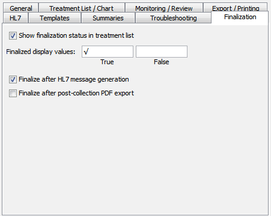

Finalizing Treatments
On this Page
Overview
Most often, you will want to save the results of your treatment in some external format – a PDF report or HL7 message – for integration into an EMR or archival. A treatment that has been successfully exported is said to be finalized, and if all the treatments of a given patient have been finalized, then that patient is said to be finalized as well. GPD provides a few mechanisms to mark treatments as finalized, and to spot treatments and patients that have not yet been finalized.
Preferences
The Preferences window has a tab that allows you to set finalization options:

Show finalization status in treatment list
If checked, in the treatment list the date/time will be annotated to indicate whether that treatment has been finalized.
Finalized display values
This lets you set the text that is shown in the treatment list (and as a field value, see below) when a treatment is finalized or not finalized, respectively. The default values are a check mark1 "√" for finalized treatments, and blank text for those that are not.
1 Actually a square root sign, U+221A, to be compatible with more fonts.
Finalize after HL7 message generation
If checked, when a treatment is successfully saved as an HL7 message in the drop-folder or transmitted via MLLP, it will be marked as finalized.
Finalized after post-collection PDF export
If checked, after a treatment report is automatically saved as a PDF (via the Export/Printing→Save Treatment Report PDF after collection preference) the treatment will be marked as finalized.
Patient and Treatment List Controls
In the treatment list, you can select the Treatment→Mark as finalized menu item (or press the shortcut key Ctrl+K) to mark a treatment as finalized; likewise with Treatment→Unmark as finalized (Shift+Ctrl+K). If the Show finalization status in treatment list preference is checked, you'll see the finalization status of the treatment in the list at the left of the window.
In the patient list, the View→Show only unfinalized patients (Ctrl+U) menu item will, if checked, filter the table of patients so that only those whose treatments have not all been finalized are shown. Since the finalization status of a patient is accessible as a field named "FINALIZED", you can set one of the columns in the patient table (using View→Configure Table Columns) to show that field, and then sort by it. By pressing Ctrl+U, you can quickly toggle between showing all patients and only those still unfinalized.